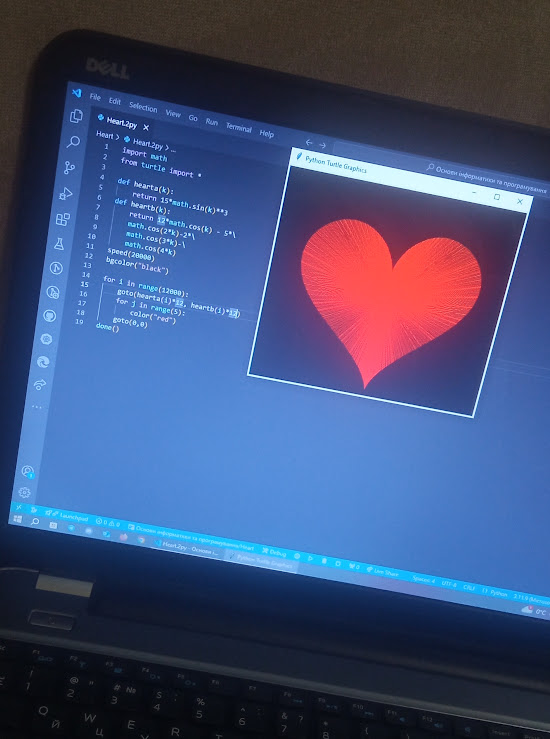

Стек технологій
- HTML5
- CSS3
- JavaScript
- Python
- C++
- Git/GitHub


Привіт! Мене звати Ася. Я — студентка 2 курсу ФБМІ КПІ.
Захоплююся програмуванням, особливо веб‑розробкою.
У вільний час дивлюся детективні фільми та серіали. Також люблю подорожувати по Україні, найбільше сподобалось у Ворохті.
Спеціальність: Комп'ютерні науки
Період: 2024 - 2028
Спеціальність: Інженерія програмного забезпечення
Період: 2019 - 2023

У 2024 році я приєдналася до технічного відділу студентської ради ФБМІ, де займалася технічним супроводом заходів. Цей досвід навчив мене працювати в команді над спільними завданнями.
Також вивчаю й надалі Python. Цікаво, що будувати графіки в matplotlib я навчилася ще до того, як почалася університетська дисципліна, де ми вивчали базову графіку (turtle).
Для створення цього серця я використала спеціальні математичні функції та бібліотеку
matplotlib.
Це стало моїм дебютним проєктом у
візуалізації даних, який надихнув мене вивчати
Python глибше.